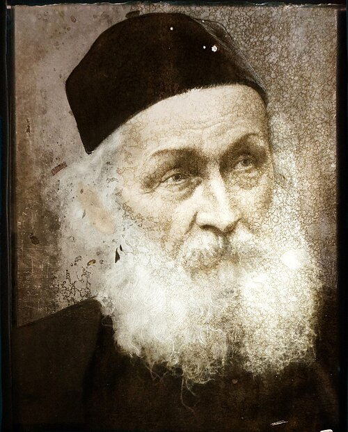
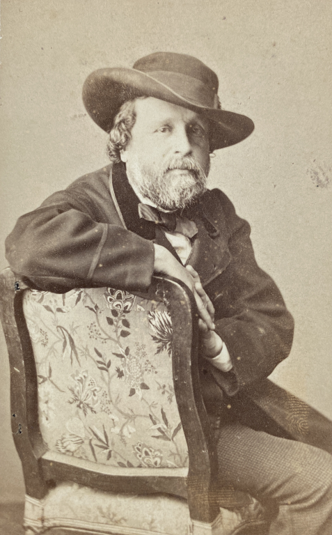
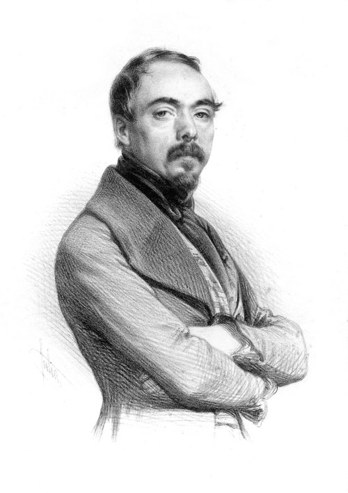
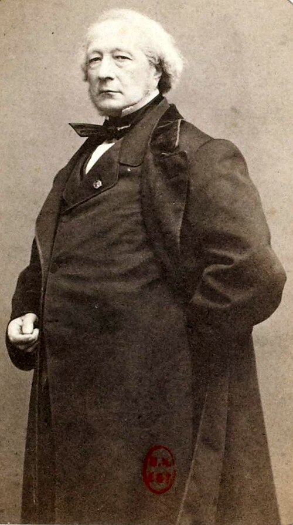
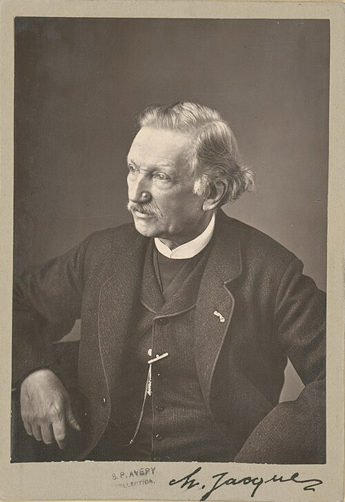

Salon de 1845
Drawings & Engravings
Dessins — Gravures
BRILLOUIN
Brillouin

M. Brillouin a envoyé cinq dessins au crayon noir qui ressemblent un peu à ceux de M. de Lehmud ; mais ceux-ci sont plus fermes et ont peut-être plus de caractère. — En général, ils sont bien composés. — Le Tintoret donnant une leçon de dessin à sa fille , est certainement une très-bonne chose. — Ce qui distingue surtout ces dessins est leur noble tournure, leur sérieux et le choix des têtes.
M. Brillouin has sent five black-pencil drawings that somewhat resemble those of M. de Lehmud; but these are firmer and perhaps have more character. — In general they are well composed. — Tintoretto Giving a Drawing Lesson to His Daughter is certainly a very good thing. — What chiefly distinguishes these drawings is their noble bearing, their seriousness, and the choice of heads.
CURZON
Curzon

Une sérénade dans un bateau , — est une des choses les plus distinguées du Salon. — L’arrangement de toutes ces figures est très-heureusement conçu ; le vieillard au bout de la barque, étendu au milieu de ses guirlandes, est une très-jolie idée. — Les compositions de M. Brillouin et celle de M. Curzon ont quelque analogie ; elles ont surtout ceci de commun, qu’elles sont bien dessinées — et dessinées avec esprit.
A Serenade in a Boat is one of the most distinguished things in the Salon. — The arrangement of all these figures is very happily conceived; the old man at the end of the boat, stretched out amid his garlands, is a very pretty idea. — M. Brillouin’s compositions and M. Curzon’s have a certain kinship; above all they share this: they are well drawn—and drawn with wit.
DE RUDDER
De Rudder

Nous croyons que M. de Rudder a eu le premier l’heureuse idée des dessins sérieux et serrés ; des cartons, comme on disait autrefois. — Il faut lui en savoir gré. — Mais quoique ses dessins soient toujours estimables et gravement conçus, combien néanmoins ils nous paraissent inférieurs à ce qu’ils veulent être ! Que l’on compare, par exemple, le Berger et l’Enfant , aux dessins nouveaux dont nous venons de parler.
We believe M. de Rudder was the first to have the happy idea of serious, tightly wrought drawings—cartoons, as they used to say. — He deserves credit for it. — But although his drawings are always estimable and gravely conceived, how inferior they nevertheless seem to what they aspire to be! Compare, for example, The Shepherd and the Child with the new drawings we have just discussed.
MARÉCHAL
Maréchal

La Grappe est sans doute un beau pastel, et d’une bonne couleur ; mais nous reprocherons à tous ces messieurs de l’école de Metz de n’arriver en général qu’à un sérieux de convention et qu’à la singerie de la maestria , — ceci soit dit sans vouloir le moins du monde diminuer l’honneur de leurs efforts. — Il en est de même de
The Bunch of Grapes is no doubt a beautiful pastel and of good color; but we shall reproach all these gentlemen of the Metz school for generally achieving only a conventional seriousness and an imitation of mastery—this without wishing in the least to diminish the honor of their efforts. — The same is true of
TOURNEUX
Tourneux

dont, malgré tout son talent et tout son goût, l’exécution n’est jamais à la hauteur de l’intention.
whose execution, despite all his talent and taste, is never equal to his intention.
POLLET
Pollet

a fait deux fort bonnes aquarelles, d’après le Titien, où brille réellement l’intelligence du modèle.
made two very good watercolors after Titian, in which a real understanding of the model shines through.
CHABAL
Chabal

Des fleurs à la gouache , — consciencieusement étudiées et d’un aspect agréable.
Flowers in gouache—conscientiously studied and pleasing in appearance.
ALPHONSE MASSON
Alphonse Masson

Les portraits de M. Masson sont bien dessinés. — Ils doivent être très-ressemblants ; car le dessin de l’artiste indique une volonté ferme et laborieuse ; mais aussi il est un peu dur et sec, et ressemble peu au dessin d’un peintre.
M. Masson’s portraits are well drawn. — They must be very like their sitters, for the artist’s drawing indicates a firm and laborious will; but it is also a little hard and dry, and resembles a painter’s drawing very little.
ANTONIN MOINE
Antonin Moine

Toutes ces fantaisies ne peuvent être que celles d’un sculpteur. — Voilà pourtant où le romantisme a conduit quelques-uns !
All these fantasies can only be those of a sculptor. — And this is where Romanticism has led some people!
VIDAL
Vidal

C’est l’an passé, à ce que nous croyons, qu’a commencé le préjugé des dessins Vidal. — Il serait bon d’en finir tout de suite. — On veut à toute force nous présenter M. Vidal comme un dessinateur sérieux. — Ce sont des dessins très-finis, mais non faits ; néanmoins cela, il faut l’avouer, est plus élégant que les Maurin et les Jules David. — Qu’on nous pardonne d’insister si fort à ce sujet ; — mais nous connaissons un critique qui, à propos de M. Vidal, s’est avisé de parler de Watteau.
It was last year, we believe, that the prejudice in favor of Vidal’s drawings began. — It would be well to put an end to it at once. — People insist on presenting M. Vidal to us as a serious draughtsman. — These are very finished drawings, but they are not made; nevertheless, it must be admitted, this is more elegant than Maurin and Jules David. — Forgive us for insisting so strongly on this subject; but we know a critic who, apropos of M. Vidal, took it into his head to speak of Watteau.
M me DE MIRBEL
M Me De Mirbel

est ce qu’elle a toujours été ; — ses portraits sont parfaitement bien exécutés, et madame de Mirbel a le grand mérite d’avoir apporté la première, dans le genre si ingrat de la miniature, les intentions viriles de la peinture sérieuse.
is what she has always been; — her portraits are perfectly well executed, and Madame de Mirbel has the great merit of having been the first to bring, into the thankless genre of miniature, the virile intentions of serious painting.
HENRIQUEL DUPONT
Henriquel Dupont

nous a procuré le plaisir de contempler une seconde fois le magnifique portrait de M. Bertin, par M. Ingres, le seul homme en France qui fasse vraiment des portraits. — Celui-ci est sans contredit le plus beau qu’il ait fait, sans en excepter le Cherubini. — Peut-être la fière tournure et la majesté du modèle a-t-elle doublé l’audace de M. Ingres, l’homme audacieux par excellence. — Quant à la gravure, quelque consciencieuse qu’elle soit, nous craignons qu’elle ne rende pas tout le parti pris de la peinture. — Nous n’oserions pas affirmer, mais nous craignons que le graveur n’ait omis certain petit détail dans le nez ou dans les yeux.
has given us the pleasure of contemplating once again the magnificent Portrait of M. Bertin by M. Ingres, the only man in France who truly makes portraits. — This is without question the finest he has painted, not excepting the Cherubini. — Perhaps the model’s proud bearing and majesty doubled the audacity of M. Ingres, the audacious man par excellence. — As for the engraving, conscientious though it is, we fear that it does not convey the full decisiveness of the painting. — We would not dare assert it, but we fear the engraver has omitted some tiny detail in the nose or the eyes.
JACQUE
Jacque

M. Jacque est une réputation nouvelle qui ira toujours grandissant, espérons-le. — Son eau-forte est très-hardie, et son sujet très-bien conçu. — Tout ce que fait M. Jacque sur le cuivre est plein d’une liberté et d’une franchise qui rappelle les vieux maîtres. On sait d’ailleurs qu’il s’est chargé d’une reproduction remarquable des eaux-fortes de Rembrandt.
M. Jacque is a new reputation that will go on growing, we hope. — His etching is very bold and his subject very well conceived. — Everything M. Jacque does on copper is full of a freedom and frankness that recall the old masters. It is known, moreover, that he has undertaken a remarkable reproduction of Rembrandt’s etchings.